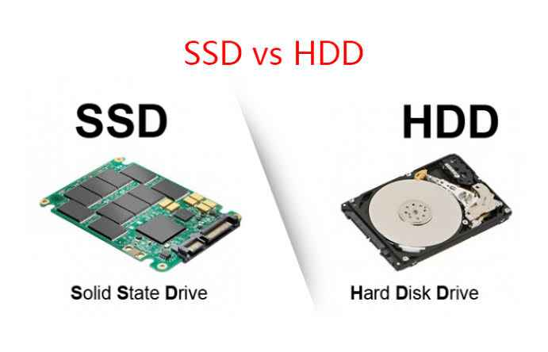

Storage Types: HDD vs. SSD, and How Memory Volatility Works
When it comes to keeping your files, photos, and operating system safe, your computer relies on secondary storage. Today, this comes down to a choice between two entirely different technologies: HDDs (Hard Disk Drives) and SSDs (Solid State Drives).
To understand how they differ—and how they contrast with temporary memory like RAM—we also need to look at the physics of memory volatility.
1. HDD vs. SSD: Moving Parts vs. Microchips
The easiest way to understand the difference is to think of an HDD as a record player and an SSD as a flash drive.

Hard Disk Drives (HDD)
Introduced by IBM in 1956, HDDs are mechanical storage devices.
- How they work: Inside an HDD is a stack of spinning magnetic platters (like CDs) and a tiny read/write head on a mechanical arm (like a record player needle). The head hovers micro-inches above the spinning platter, using magnetic fields to write data as 1s and 0s.
- The Catch: Because the platters have to spin up and the arm has to physically move to find your data, HDDs have a physical speed limit. They are also sensitive to drops and physical shock.
Solid State Drives (SSD)
SSDs are modern, entirely electronic storage devices.
- How they work: SSDs have no moving parts. Instead, they write data to interconnected silicon microchips called NAND flash memory (the same technology inside your phone or USB thumb drive).
- The Benefit: Because there are no mechanical parts to move, data retrieval is nearly instantaneous. SSDs are incredibly fast, silent, energy-efficient, and highly resistant to physical damage.
Quick Comparison Table
| Feature | HDD (Hard Disk Drive) | SSD (Solid State Drive) |
|---|---|---|
| Speed | Slower (Approx. 80–160 MB/s) | Blazing Fast (500 MB/s to over 7,000 MB/s) |
| Mechanism | Mechanical (spinning disks, moving arm) | Electronic (microchips, no moving parts) |
| Durability | Vulnerable to physical shocks and drops | Highly durable; shock-resistant |
| Lifespan | Can fail over time due to mechanical wear | Wears out after a high volume of writes (TBW) |
| Best Used For | Mass, budget-friendly archiving (e.g., 4TB backups) | Operating systems, gaming, and active work files |
2. Understanding Memory Volatility
To understand why we need both storage (SSDs/HDDs) and memory (RAM), we have to understand volatility. In computer science, memory is split into two physical categories: Volatile and Non-Volatile.
Volatile Memory (Temporary)
Volatile memory requires electrical power to maintain its data. The moment the power is cut, everything stored in it instantly vanishes.
- Primary Example: RAM (Random Access Memory).
- How the physics works: RAM is made up of millions of tiny transistors and capacitors grouped together on integrated circuits. The capacitors hold an electrical charge to represent a 1, and discharge to represent a 0. Because these capacitors naturally leak charge, they must be dynamically refreshed with electricity thousands of times per second. When the power goes out, the capacitors instantly lose their charge, resetting all data to zero.
Non-Volatile Memory (Permanent)
Non-volatile memory retains its data even when powered down.
- Primary Examples: SSDs, HDDs, USB drives, and ROM chips.
- How the physics works in an HDD: Data is written by magnetically aligning microscopic particles on the platter. Once aligned, they stay that way until a new magnetic charge forces them to change, electricity or no electricity.
- How the physics works in an SSD (NAND Flash): SSDs use a special type of transistor called a floating gate transistor. It uses a strong electrical pulse to trap electrons in a microscopic "cage" (the gate). Once trapped, the electrons cannot escape, even when the power is turned off. This trap holds the charge—and your data—for years.
The Perfect Partnership
Your computer uses both types of memory to balance speed and permanence:
- When you turn on your computer, the non-volatile SSD safely passes your operating system files to the volatile RAM.
- As you work, the CPU reads and writes data to the ultra-fast RAM because SSDs are still too slow to keep up with the CPU's raw speed.
- When you hit Save, the computer writes your progress back to the non-volatile SSD, ensuring it will still be there tomorrow when you turn the machine back on.